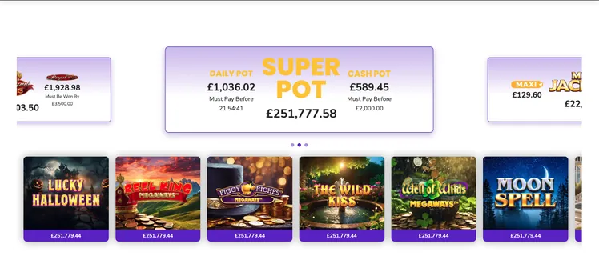
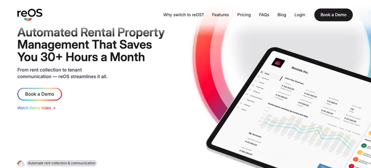
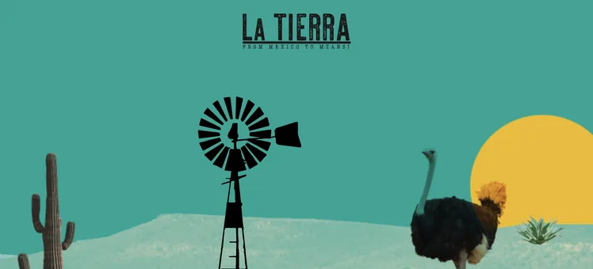
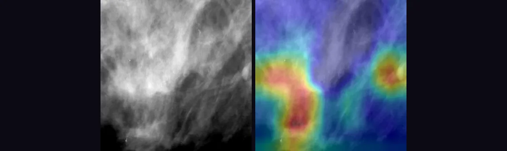
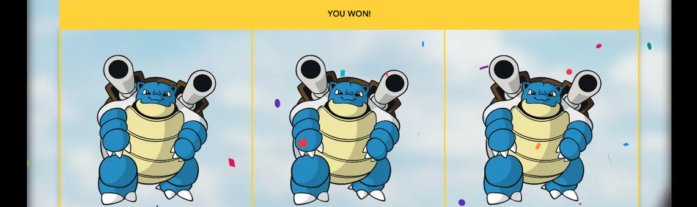
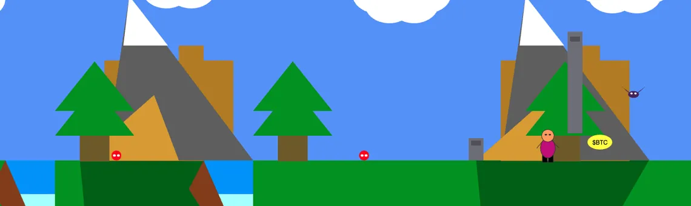

A real-time jackpot carousel live on Mecca Bingo and Grosvenor Casino: a Cloudflare Worker polls and caches jackpot values from multiple providers, and a Remix service layer streams them into smoothly animated UI. Multi-provider normalisation, polling architecture and cache invalidation under production traffic — the code stays with the employer; the live site speaks for itself.


A genetic algorithm evolving 3D creatures in a PyBullet physics sim to climb a mountain — selection, crossover, mutation, honest fitness design that catches its own reward hacks, and an interactive explainer where you can step through evolution yourself. GA, not RL — and the writeup explains exactly why that distinction matters.

A four-stage pipeline — baseline CNN → frozen VGG16 → regularisation → fine-tuning — on CBIS-DDSM mammography, with Grad-CAM heatmaps showing where the model looks, including on the cases it gets wrong. Honest headline: AUC 0.77 on 714 held-out scans — above the published mean-radiologist benchmark, below clinical grade, and the case study says so up front.
Retrieval-augmented pipeline: chunking, local sentence-transformer embeddings, cosine search, and grounded answers citing their source chunks — plus a similarity guardrail that says "no relevant content" instead of hallucinating. FastAPI backend, React + TypeScript front end, 61 tests and an evaluation harness grading retrieval quality.


A p5.js platformer from first-year programming — collect the coins, dodge the enemies — the first code I ever shipped. Kept here deliberately: an AI-assisted rebuild is underway, and the before/after will live side by side.
Step through a real genetic algorithm one generation at a time — selection, crossover, mutation, elitism — and watch the fitness distribution shift on actual seeded experiment data.
LIVEopen the stepper →↗ opens the Evolving Climbers case studyPopulation size and mutation rate, swept across real runs. Switch between them and watch the curves redraw — the exploration-versus-exploitation tradeoff, on measured data rather than a diagram.
LIVEsee the sweeps →↗ opens the Evolving Climbers case studyA Grad-CAM explorer over held-out mammograms: pick a scan, see the prediction, confidence, and the exact regions that drove it — including the cases the model got wrong, on purpose.
SHIPS WITH CANCER DETECTIONThe particle system on the front page is a live flocking sim that reacts to your cursor. A short interactive note on how it works — and how it hands off to the real evolution footage.
LIVE ON THIS PAGE ↑Each dot is an agent with a velocity. Every frame: your cursor repels agents inside the repel radius, velocities decay (friction), and any two agents closer than the link distance get a line whose opacity falls with distance. That's it — the "organism" look is pure emergence. Drag the dials and watch the hero change behaviour live:
In the full build this hands off to real evolution footage — same idea, but the agents are evolved creature genomes in a physics sim.